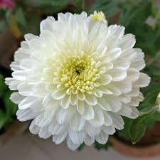

Cactus Plant Sapling (1pc)
Rs. 119.00

Moss Rose Plant Sapling (1pc)
Rs. 69.00

Jasmine Plant Sapling (1pc)
Rs. 75.00

Chrysanthemum Sapling (1pc)
Rs. 69.00

Crossandra Plant Sapling(1Pc)
Rs. 69.00

Gerbera Flower Sapling (1pc)
Rs. 119.00

Hibiscus Plant Sapling (1pc)
Rs. 69.00